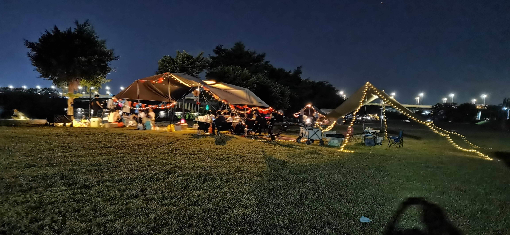
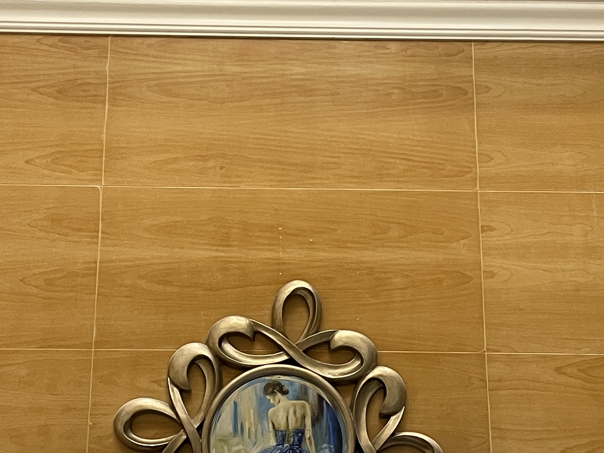

22国庆流水账
首先要感谢的是大中华区神奇女侠送的生日礼物，富有想象力的基础钱包[doge], 当天没有按她的要求发圈就在这里补偿了，也很感谢她对这个小小站点的大力支持~ 现在想想域名里的eggbiscuit到底是什么离谱合成词…

这次写作就不注重逻辑了，想到什么写什么。国庆和亲戚家人在广州见面了，妈咪带着她的小儿子过来了！alcohol真的可以让人吐露真性情。在我的认知下，表哥正在经营的是月流水达到百万级的企业，而且他的野心和目标远远不止于此。作为学生党，我能做的不多，这次又是默默的听他的生意之道的时候了（苦笑）。不过呢，他的思维和格局有很多值得学习和借鉴的地方。
有一点他提到的是顶层思维，打个比方，如果要设计房子的灯，那就先把房子的灯照到的地板先设计了，再去设计这个灯。也就是从全局自上而下的打通每一个环节。在这之中远大的眼光，可靠的人脉和充分的资源的重要性就体现出来了。然后资本的加持也是很重要的，目前看来这点比较难以达到，总之先慢慢积累吧。
他的雄心壮志和商业头脑也是令我佩服的。在大学期间一天甚至担任过六种角色，其中不乏做班委、助理以及各种兼职。他在大学期间做的是他喜欢和乐意做的事情，这也是他持续不断的动力来源之一。
现在我还很难设身处地地体会他现在的心境和想法，说到底我还只是一个尚未接触社会的大学生罢了。在大环境下，许多人都难免地陷入浮躁之中，其中也包括我。我时常在想，自己正在做的事情是否是对的。在国庆之前的一段时间我也常常会去思考一些问题，就是总感觉生活少了一点什么。在这次交谈之中我似乎领悟到了什么。那就是在大学要勇敢地尽可能地去尝试不同的事情，其中不乏发扬自己的特长和做一些喜欢做的事情，逃离舒适圈。其实这样的说法不仅仅在表哥的口中说到，之前有一次在和回国的留学生学长兼邻居也提到过。而让我没想到的是他们都提到了我以前在某一时刻表演的弹钢琴（没想到他们印象都这么深刻，在我当时看来算是肌肉记忆了）。对啊，为什么要荒废掉这个兴趣呢？老实说，以前弹钢琴都是被逼的，日复一日地练习同一首练习曲、奏鸣曲和复调乐曲是多么枯燥啊。现在我想明白了，那个时候还小，还没有寻找到为之努力的意义。其实我相信大多数学乐器的人，最终的意义是站在舞台上把练习的曲子完美地为观众展现出来，要说玩音乐的人不渴望舞台那都是假的。重新拾起来的想法其实我还是断断续续地会出现的了，只是还没有付诸行动罢了。
以上是谈话的某一瞬间浮现出来的想法。总结来说就是表哥对于他的事业有着近乎痴迷的渴望，鉴于这点，我还是对他的发展抱着十足的信心的，我就在这里默默地为他加油吧！
现在我们就换一个话题，国庆总是少不了吃喝玩乐的环节嘛。首先是国庆第一天二饭三肠粉的初品尝!但是我还是不太满意肉的份量。The more the better!

没吃午饭，快进到海鲜大餐环节。无图自行脑补~
第二天由于没有48小时核酸而进不了从化的一个景区还是比较可惜，就草草地吃了一顿饭就回来了。
但是很快就有了plan B，我们去了一个合适的露营地露营，不得不说表哥和嫂嫂还是蛮会玩的。


所有食材都是在草地上现做的QAQ，未曾拥有过的野餐体验… 而且酒也喝了好几天了[抓狂]
第三天直接开车到了清远英德，路途遥远后半程的话也是由我接手（虽然回程全程都是我在开）。冷知识：超速不超出规定时速的20%都不算超速。
我们直接去到了度假村，接下来就是爽玩2天。
表哥有预告过要游泳，这已经是为数不多的能在广东夏天开展的户外活动的方式了… 想起了学校的泳池，办了健康证之后感觉在天气变冷之前都不会再去乐跑了，一切就交给脚本了哈哈哈。

吃：打火锅，依然是自力更生，与此同时，dady教会了我学会了做五花肉，一种罪恶的富含脂肪的肉类，真香。

猜猜这是一幅画还是镜子中的画的反射。

泡着温泉，记得当时在身心放松的这个时刻陷入了一段时间的冥想。
关于旅游的事就说这么多了，回到学校后接下来我真的去做了想要练习钢琴的准备。一直想玩的是即兴伴奏，在外面找了个老师，不知道学不学的来。顺带找了个主唱，期待在学成那天能去抱主唱的大腿参加演出。
一直担忧的问题是可以去哪里练琴，找了学校的贴吧才知道原来可以借艺术生的琴房。于是我很不要脸地打断了正在练琴的学生（本当にすみません），表明来意后询问了相关事宜，她很爽快地答应了，把我高兴坏了，也就是说，我可以在琴房有余位时她不练琴且有空帮我开琴房的时候去练琴！
关于练琴的一些总结以后可能会另开新帖，后来去琴房练习了音阶和哈农，老师说我太久没弹手指很僵硬，当是复健练习了。事实证明也的确是。乐理知识的复习和视唱练耳的学习也刻不容缓（突然搞得很专业一样）
国庆的有感而发，希望以后博客能够更新的勤快一点，内容优质一点，这次纯粹是当作日记来发泄一下了。
twikoo评论被墙了，我也很无奈啊。想要在这里看到评论或者发表评论只能fan墙了，真是没办法的事情，以后再找解决方案吧。